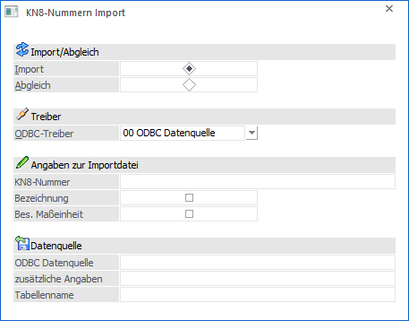
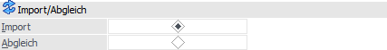
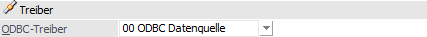
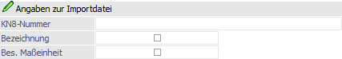
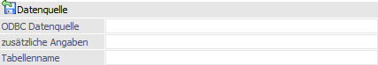

Durch die Anwahl des Buttons "Import" im Programm KN8 Warenkatalog öffnet sich das Fenster "KN8-Nummern Import". Hier können KN8-Nummern importiert oder mit bestehenden Nummern abgeglichen werden.

Import/Abgleich

Ø Import / Abgleich
An dieser Stelle kann definiert werden, ob ein Import oder Abgleich stattfinden soll:
ü Import
Wird mit der Einstellung
"Import" gearbeitet, so werden nach Drücken des Buttons "Ok" die zu
importierenden KN8-Nummern in die KN8-Tabelle eingefügt. Nicht vorhandene
KN8-Nummern werden als neue Zeilen eingefügt, bei bestehenden KN8-Nummern werden
die Bezeichnung, sowie die besondere Maßeinheit, aktualisiert.
Hinweis
Die KN8-Nummern werden erst
gespeichert, wenn der Button "Ok" im Fenster "KN8 Warenkatalog" gedrückt wird.
Falls der KN8 Warenkatalog beendet wird ohne den OK-Button zu drücken werden
keine Änderungen gespeichert.
Geprüft wird beim Import zum einen ob die
KN8-Nummer tatsächlich 8-stellig ist und zum anderen werden Leerstellen in den
KN8-Nummern entfernt.
ü Abgleich
Nachdem ab 2006 laut
Statistischen Bundesamt bestimmte KN8-Nummern nicht mehr verwendet werden dürfen
gibt es die Möglichkeit die KN8-Nummern abzugleichen.
Nach Drücken des
Buttons "Ok" werden die "alten" KN8-Nummern auf "inaktiv" gesetzt, wenn sie im
KN8-Stamm vorhanden sind. Zusätzlich werden die "alten" Nummern im Artikelstamm
durch die "neuen" KN8-Nummern ersetzt.
Am Ende wird ein Protokoll am Drucker
ausgegeben, wo die Schritte für die einzelnen KN8-Nummern dokumentiert sind
Hinweis
Die KN8-Nummern werden erst
gespeichert, wenn der Button "Ok" im Fenster "KN8 Warenkatalog" gedrückt wird.
Falls der KN8 Warenkatalog beendet wird ohne den OK-Button zu drücken werden
keine Änderungen gespeichert.
Änderungen der KN8-Nummer im Artikelstamm, die
vom Programm im Zuge des durchgeführten Abgleichs erfolgt sind, werden hingegen
nicht zurückgesetzt, wenn der durchgeführte Abgleich verworfen wird.
Beispiel
Beim Artikel "4711" ist die KN8-Nummer "04069002" hinterlegt. Im KN8 Warenkatalog wird der Abgleich gestartet, durch den die KN8-Nummer "04069002" durch die Nummer "04069015" ersetzt wird. Das Programm aktualisiert automatisch die im Artikel "4711" hinterlegte KN8-Nummer auf die neue Nummer. Werden im KN8 Warenkatalog die Änderungen nicht mit dem Button "Ok" bzw. des Taste F5 übernommen (sondern verworfen), dann wird die KN8-Nummer im Artikel "4711" nicht wieder zurückgesetzt! In diesem Fall wäre im Artikel "4711" eine KN8-Nummer hinterlegt, die es laut KN8-Warenkatalog nicht gibt.
Treiber

Ø ODBC-Treiber
An dieser Stelle erfolgt die Auswahl des ODBC-Treibers, welcher verwendet werden soll. Je nachdem welcher Treiber ausgewählt wurde, wird die weitere Eingabe des Zielpfades und des Namens der Datei bzw. Tabelle oder Datenbank gestaltet.
Achtung
Die angebotenen Treiber sind abhängig von der Installation des PCs ab, wobei alle vorhandenen 32-Bit ODBC-Treiber zur Verfügung stehen (mesonic ist für die Funktionsfähigkeit bzw. das Vorhandensein der Treiber nicht verantwortlich).
Angaben zur Importdatei

Ø KN8-Nummer
In diesem Feld muss im Falle einer Importdatei im TXT-Format oder im XLS-Format der Name der ersten Spaltenbezeichnung der KN8-Nummer angegeben werden. Handelt es sich hingegen um eine Abgleichsdatei, so muss der Name nur bei XLS-Formaten angegeben werden, d.h. beim TXT-Format bleibt das Feld leer.
Bei Tabellen wie Access oder SQL-Server wird immer die erste Spalte der Tabelle verwendet (und muss somit nicht angegeben werden).
Ø Bezeichnung (steht nur beim "Import" zur Verfügung)
Durch Aktivieren der Checkbox kann festgelegt werden, ob in der Importdatei die Bezeichnung der KN8-Nummer vorhanden ist und importiert werden soll.
Ø Bes. Maßeinheit (steht nur beim "Import" zur Verfügung)
Durch Aktivieren der Checkbox kann festgelegt werden ob in der Importdatei die bes. Maßeinheit der KN8-Nummer vorhanden ist und importiert werden soll.
Datenaufbau - Importdatei
1. Spalte = KN8-Nummer
2. Spalte = Bezeichnung
3. Spalte = bes. Maßeinheit
Zu beachten ist weiteres (gleich wie bei anderen Importmöglichkeit wie z.B. Stammdatenimporte) dass z.B. beim Import von XLS-Dateien als Tabellenname der Name des definierten Bereiches angegeben werden muss oder dass Textdateien entweder mit fixer Länge erstellt oder mit Trennzeichen versehen sein müssen.
Datenaufbau - Abgleichsdatei
1. Spalte = "alte" KN8-Nummer
2. Spalte = "neue" KN8-Nummer
Zu beachten ist weiteres (gleich wie bei anderen Importmöglichkeit wie z.B. Stammdatenimporte) dass z.B. beim Import von XLS-Dateien als Tabellenname der Name des definierten Bereiches angegeben werden muss oder dass Textdateien entweder mit fixer Länge erstellt oder mit Trennzeichen versehen sein müssen.
Datenquelle

Ø Beschreibung von Datei bzw. Datenbank
In Abhängigkeit der am PC installierten ODBC-Treiber werden Felder angezeigt, in denen die Quelle (Bereich aus dem die Daten in die WinLine importiert werden) beschrieben wird.
Buttons

Ø Ok
Durch Anwahl es Buttons "Ok" bzw. der Taste F5 wird der Import bzw. der Abgleich durchgeführt.
Hinweis
Die Besonderheiten des Imports bzw. Abgleichs sind dem Bereich "Import/Abgleich" zu entnehmen.
Ø Ende
Mit Hilfe des Buttons "Ende" bzw. der Taste ESC wird das Fenster geschlossen und kein Import bzw. Abgleich durchgeführt.